Pepsi nació en 1893 en Carolina del Norte (EE. UU.), creada por el farmacéutico Caleb Bradham bajo el nombre original de «Brad's Drink».
En 1898 adoptó el nombre Pepsi-Cola y hoy es el producto bandera de PepsiCo, uno de los mayores grupos de alimentos y bebidas del planeta.
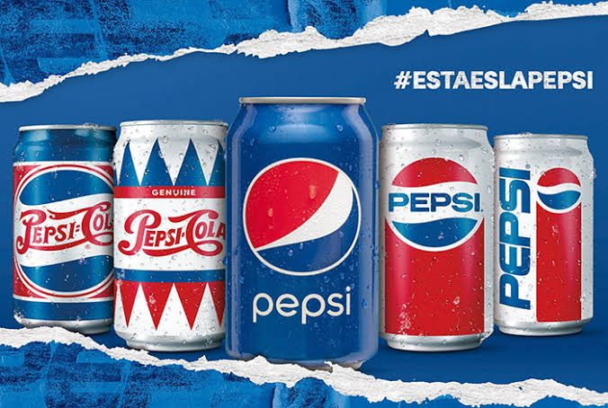
Los datos que explican el tamaño de la marca y su compromiso.
Año de creación en New Bern, EE. UU.
Países y territorios donde se consume hoy
Marcas del grupo PepsiCo que facturan más de US$ 1,000M al año (Lay's, Gatorade, Doritos, Quaker)
Del agua utilizada se repone en zonas de alto estrés hídrico
Meta Net-Zero, una década antes del Acuerdo de París
Más de un siglo de cambios visuales para mantenerse vigente en cada época.
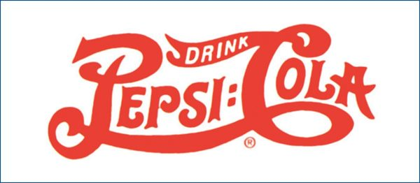
Letras cursivas rojas sobre fondo blanco, muy parecidas al estilo clásico de época.
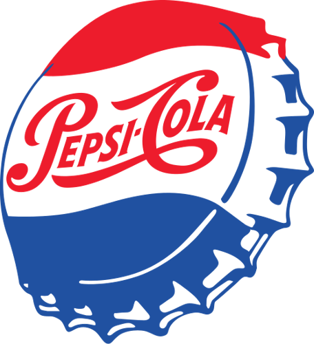
Se introduce el diseño circular tricolor (rojo, blanco y azul) en forma de tapa de botella.
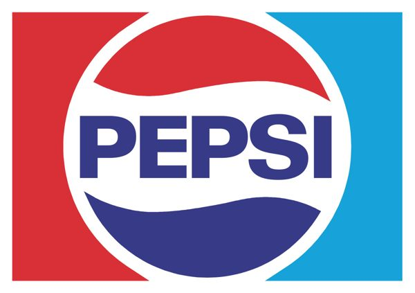
Formas geométricas limpias y minimalistas que consolidan el ícono global.
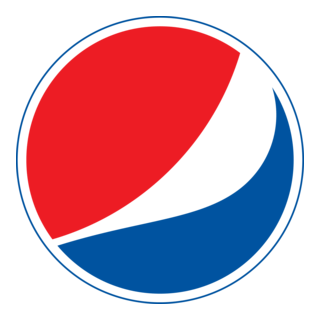
Rediseño radical hacia lo simple y digital. La franja interna se inclinó simulando una sonrisa sutil, eliminando el texto de adentro.
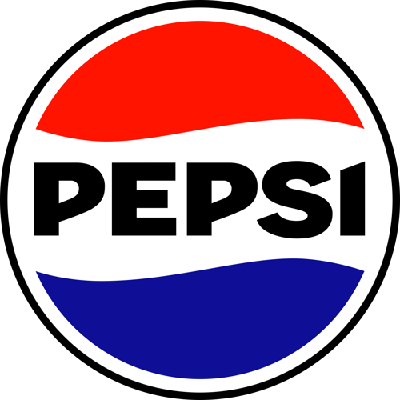
Vuelve el texto PEPSI dentro del globo con bordes negros y azul eléctrico vibrante.
En lugar de vender nostalgia familiar, Pepsi se posicionó como la bebida de los jóvenes, el cambio y la actitud rebelde.
Alianzas históricas con figuras globales como Michael Jackson, Britney Spears, Beyoncé, Shakira y Bad Bunny.
Presencia masiva en eventos de máxima audiencia: Show de Medio Tiempo del Super Bowl y UEFA Champions League.
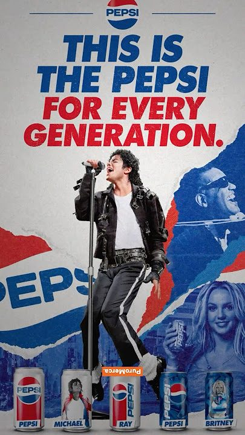
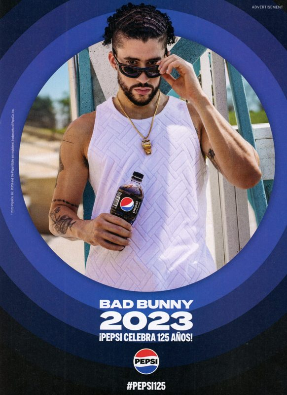
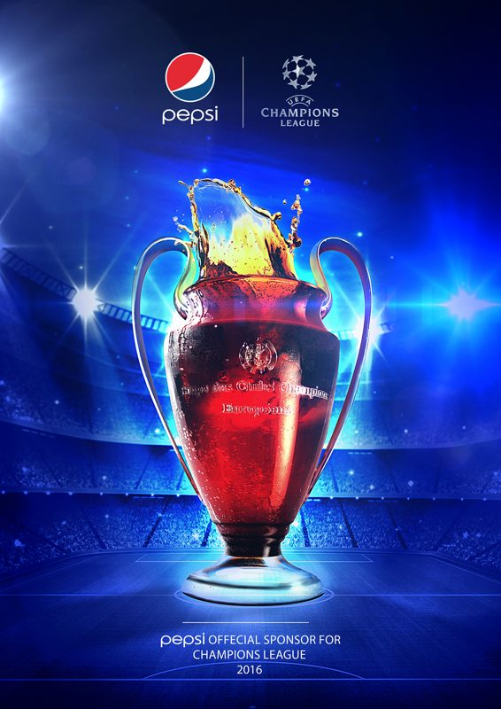
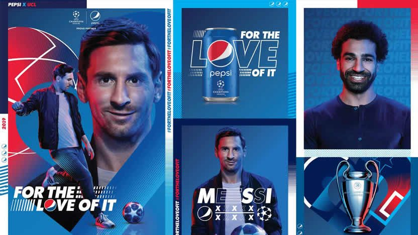
en pruebas a ciegas del Reto Pepsi*
Nuestro perfil cítrico más fresco y dinámico supera repetidamente a la competencia cuando el consumidor decide solo por el sabor real, sin etiquetas.
alcance en consumo diario (bebidas + snacks)
Mientras la competencia depende casi solo de líquidos, PepsiCo domina cada ocasión de consumo integrando bebidas con líderes como Lay's, Doritos y Gatorade.
en conexión con música, deporte y cultura pop
Frente a un enfoque tradicionalista y nostálgico, Pepsi marca el ritmo global con la Champions League y los artistas que definen cada generación.
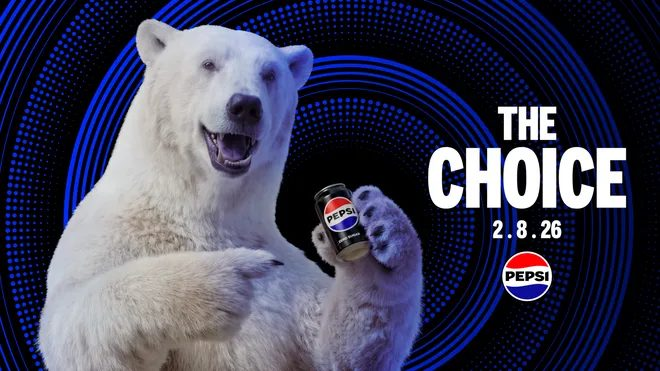
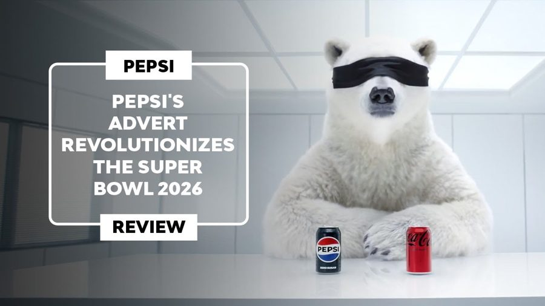
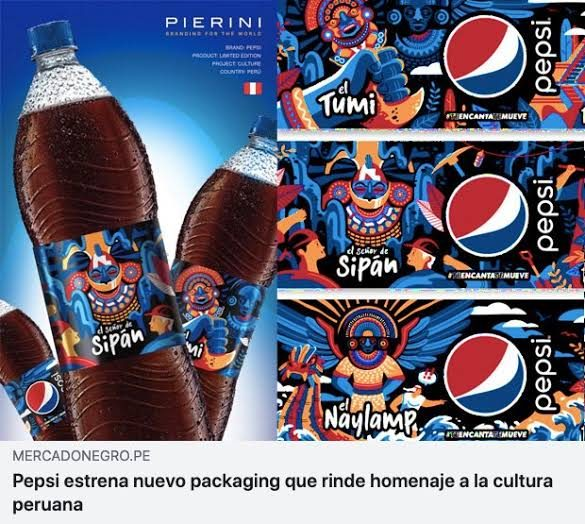
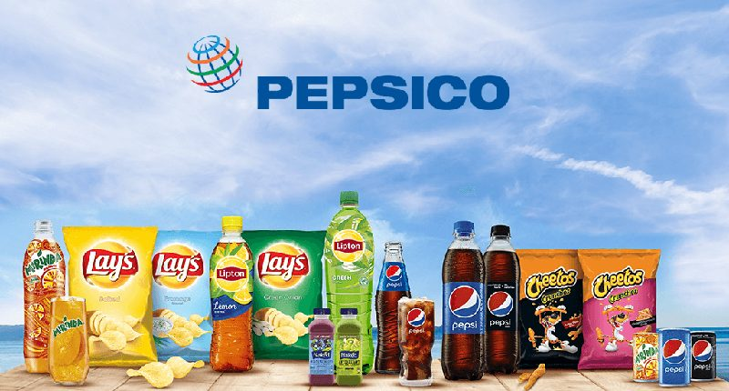
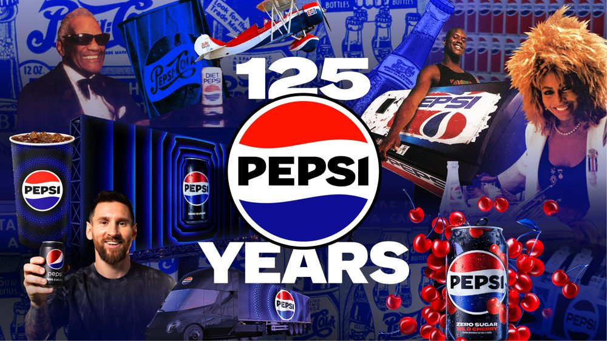
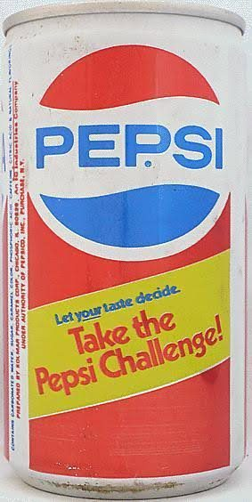
* El Reto Pepsi fue una prueba promocional de la marca; las cifras provienen de comunicación corporativa, no de un estudio independiente.
Con PepsiCo Positive (pep+), lideramos la transformación de la industria de bebidas hacia un modelo circular, regenerativo y libre de emisiones netas.
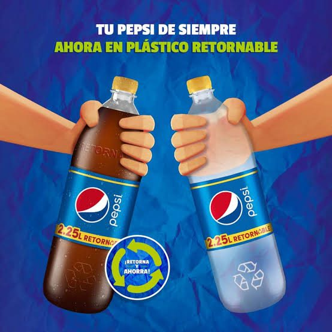
Migración acelerada a botellas fabricadas 100% con plástico reciclado (rPET) y expansión de sistemas retornables y SodaStream para eliminar plástico virgen.
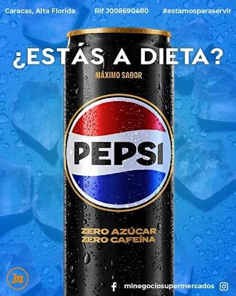
Impulso líder con Pepsi Zero Azúcar, reformulación continua de recetas y reducción activa de azúcares añadidos manteniendo todo el sabor.
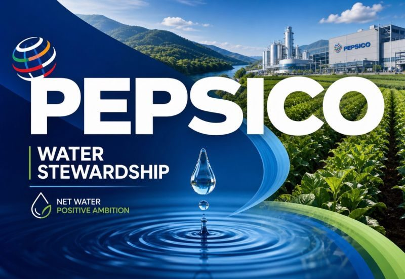
Reabastecimiento de más del 100% del agua utilizada en zonas de alto estrés hídrico y agricultura regenerativa en más de 7 millones de acres.
De «Brad's Drink» en 1893 a un ícono global: cinco etapas de logo que muestran su adaptación a cada época.
Música, deporte y juventud posicionan a Pepsi como la elección de cada generación.
Con pep+ apuesta por envases circulares, portafolio más saludable y Net-Zero al 2040.
Pepsi no vende solo un refresco: vende experiencias.